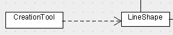

浅谈设计模式附录一: 标识
Table of Contents
类图

- 实例化

CreateTool创建LineShape对象。
- 继承

类LineShape是继承父类Shape.
- 委托

委托是组合的一种方法，使组合具有继承的复用功能。LineShape保持Color对象的一个引用，当LineShape做一些Color的功能时，它不用从父类继承，它把功能委托给Color来完成。
- 聚合

聚合意味这一个对象拥有另一个对象或对对另一个对象负责。同时意味这一个聚合对象和它的拥有者具有相同的生命周期。
- 注释

右边的框框表示对 Draw() 的注释。